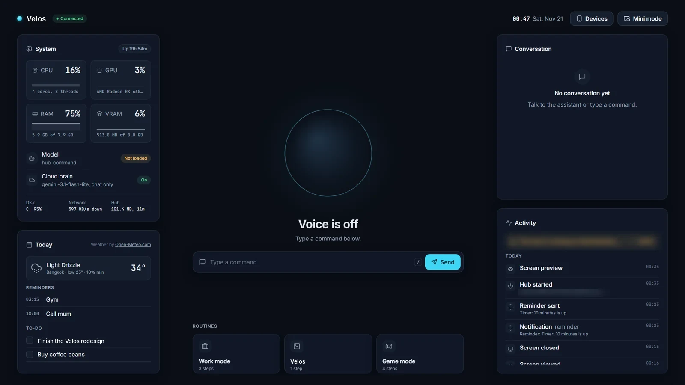
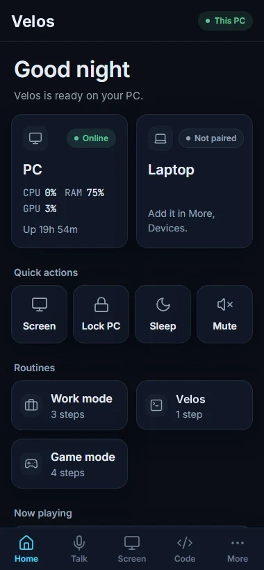

Talk to Velos
Scripted answers in the voice of Velos. The real one runs on my PC.
- Hears its nameopenWakeWord with a wake-word model I trained, plus a check that it’s my voice.
- Writes it downfaster-whisper turns the speech into text on the CPU.
- DecidesQwen3 4B runs on my RX 6600 XT through Ollama. Chat goes to free Gemini, with 4 seconds before it falls back to the local model.
- ActsOpens apps and sites, controls the PC, and starts and watches coding sessions.
- AnswersPiper speaks each sentence as soon as it’s ready.
Everything runs over my private Tailscale network, so the phone can reach the PC from anywhere: voice, commands, and a remote desktop streamed as GPU-encoded video over WebRTC.
Velos
Say its name and my PC listens. From my phone, I can run it from anywhere.
Voice assistant, 2026, solo
A voice assistant for my PC, laptop and phone. It wakes when I say its name, using a wake-word model I trained, runs a language model locally on my AMD graphics card, and hands harder questions to a free cloud model. My phone controls the PC over a private Tailscale network, including a remote desktop streamed as hardware-encoded video, and it can start and watch coding sessions so I can approve work while I'm out.
On my 8 GB PC, replies sometimes took 25 seconds because the model kept reloading. I kept one model loaded, sent each sentence to speech as soon as it was ready, and gave the cloud four seconds before falling back to the local model.
- 877 automated tests
- 24 of 25 new voice commands handled right on the first try
- Every part runs on free tools
Ask me for a live demoThe code is private. I'll demo it in an interview.